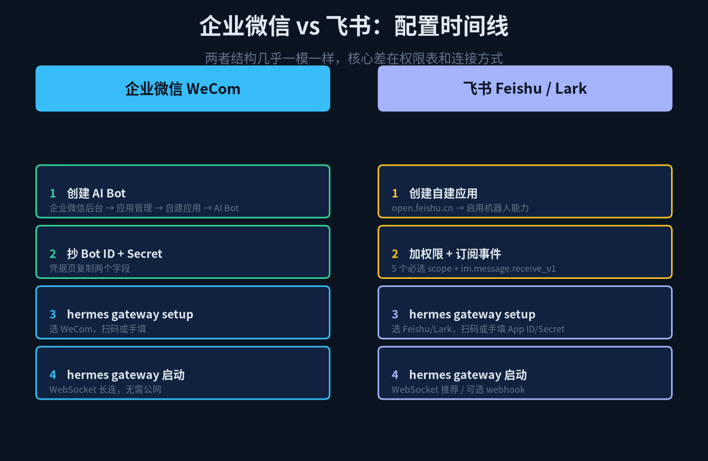
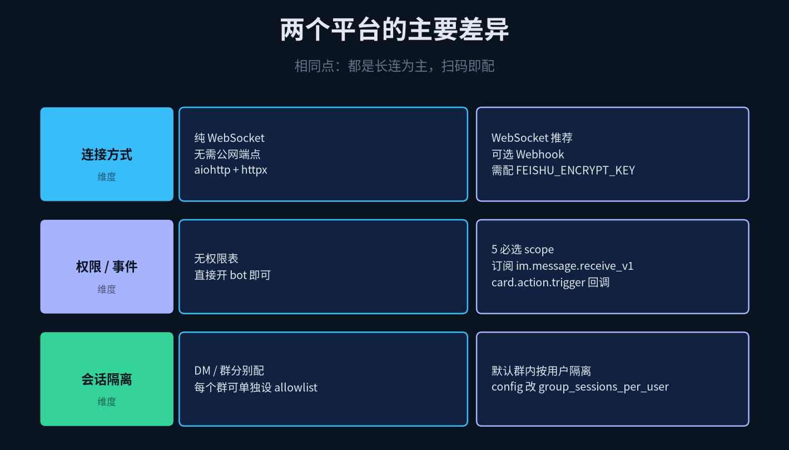
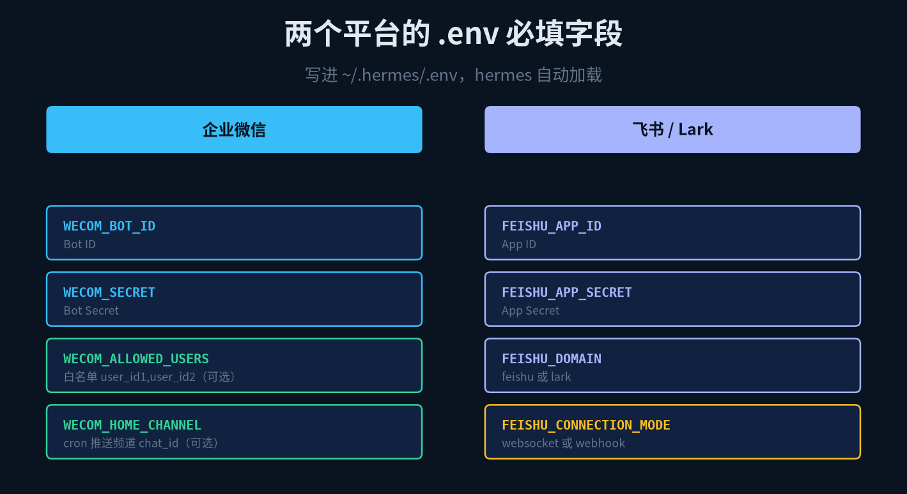
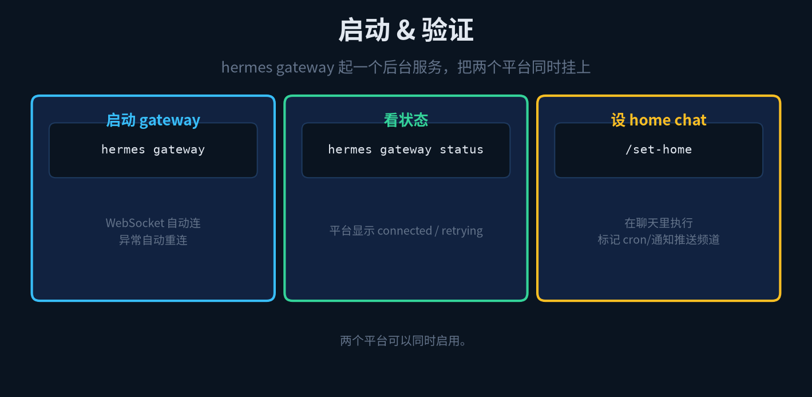

HERMES AGENT · MESSAGING
Hermes Agent 连接企业微信 & 飞书
一步一步把 Agent 挂到 IM 群组里
上篇讲了怎么把 Hermes CLI 跑起来、装技能、接模型。但 CLI 始终是给自己用的工具。你要是想让团队里所有人都能跟 Agent 对话，就得把它挂到企业微信或者飞书里。
Hermes 的做法是 hermes gateway —— 一个常驻进程，同时监听多个 IM 平台的消息，转发给本地 Agent，再把回复推送回去。CLI 是你一个人用的终端，gateway 是团队共享的对话入口。
好消息是，企业微信和飞书可以同时挂。坏消息是，两个平台的接入路径和权限模型差得挺远，别指望一份配置通吃。

图 1 · 双平台接入流程对比
1
企业微信：走官方 AI Bot WebSocket
企业微信的接入是三个平台里最干净的一条路。只有一种连接方式 —— WebSocket。你不需要公网端点，不需要 ngrok 或者内网穿透工具，跑起来就能收消息。
创建 Bot 有两条路，hermes gateway setup 交互式向导会引导你扫码或手动操作。手动路径是 work.weixin.qq.com 登录管理后台，应用管理 → 自建应用 → 新建应用时选 AI Bot 类型。这个类型很关键 —— 普通自建应用拿不到 WebSocket 接入权限。
建好之后你会拿到两样东西：Bot ID 和 Secret。往环境变量里一填，gateway 就能启动了。
# ~/.hermes/.env 里加两行
WECOM_BOT_ID=wb_xxxxxxxxxxxxxxxx
WECOM_SECRET=xxxxxxxxxxxxxxxxxxxxxxxxxxxxxxxxxxxxxxxx
# 可选：谁能直接 DM 这个 Bot，留空就是全员开放
WECOM_ALLOWED_USERS=user1,user2,user3
# 可选：Bot 上线时在哪个群里发一条问候
WECOM_HOME_CHANNEL=oc_xxxxxxxxxxxxxxxxxxxxxxxxxxxxxxxx
企业微信还有几个独有的权限控制点值得提一下。DM Policy 决定了 Bot 能不能被私聊 —— open 是全员可 DM，allowlist 只白名单用户，disabled 彻底关掉私聊，pairing 是扫码配对模式，只有完成配对的人能私聊。
更细的控制在群里。Per-Group Sender Allowlists 可以给每个群单独设 allow_from，支持通配符 *。意思是，同一个 Bot 在 A 群允许所有人发言，在 B 群只允许三个人触发 —— 这种颗粒度飞书那边暂时还没做到。
2
飞书 / Lark：两种连接模式二选一
飞书的接入比企业微信复杂一些。它有两种连接模式，你得二选一。websocket 是 Hermes 推荐的 —— 和企业微信一样不需要公网端点。webhook 模式需要你有一个公开可访问的 HTTP 端点，适合已经有反向代理的团队。
创建飞书 Bot 也可以走交互式向导。手动的话去 open.feishu.cn，创建一个「企业自建应用」，启用「机器人能力」。然后是权限 —— 这步容易漏，Hermes 文档列了五个必选 scope：
im:message 收发消息
im:message:send_as_bot 以 Bot 身份发言
im:resource 下载图片和文件
im:chat 获取会话信息
im:chat:readonly 只读会话成员
权限加完还不算完。事件订阅必须勾上 im.message.receive_v1，否则 Bot 收不到任何消息。如果你打算用交互卡片（卡片按钮、下拉菜单），还要订阅 card.action.trigger 回调事件。
最后是发布版本。飞书的权限变更不会立即生效，你得创建一个版本并审核通过，Bot 才能真正上线。企业微信那边没这么严格 —— 建完应用加完权限，扫码就能用。
# ~/.hermes/.env 里加四行
FEISHU_APP_ID=cli_xxxxxxxxxxxxxxxx
FEISHU_APP_SECRET=xxxxxxxxxxxxxxxxxxxxxxxxxxxxxxxxxxxxxxxx
FEISHU_DOMAIN=feishu # 国内飞书填 feishu，海外 Lark 填 lark
FEISHU_CONNECTION_MODE=websocket # 或 webhook
# webhook 模式才需要这两行
FEISHU_ENCRYPT_KEY=xxxxxxxxxxxxxxxxxxxxxxxxxxxxxxxx
FEISHU_VERIFICATION_TOKEN=xxxxxxxxxxxxxxxxxxxxxxxx
填完记得把应用重新发布一次 —— 换了 secret 或改了 domain 后，飞书的 token 缓存不会自动刷新。
3
三个维度的差异
两边的配置都写完了。你会发现企业微信和飞书的接入逻辑差异不小，集中在三个地方：连接方式、权限事件、会话控制。

图 2 · 双平台差异对比
连接方式 —— 企业微信只有 WebSocket，跑起来直接连。飞书两种都给你选，推荐 WebSocket 但 Webhook 也能用，适合已有 HTTPS 入口的环境。
权限 & 事件 —— 企业微信建应用时选 AI Bot 类型，权限是预置的。飞书要手动加 5 个 scope + 勾 2 个事件订阅 + 发布版本。门槛更高，但也更灵活。
会话控制 —— 企业微信有 Per-Group allowlist，能给每个群设不同的发言人白名单。飞书目前只有全局 FEISHU_ALLOWED_USERS，没到群级别的颗粒度。
另外两个小差异：海外用 Lark 的话 FEISHU_DOMAIN 改成 lark。企业微信原生支持 streaming 回复（消息是一段一段流式推的），飞书也有 streaming 但需要额外适配。
4
所有环境变量一次看全
上面分着讲的时候是分开记的。一张对照表把两边的字段列出来，方便你 copy-paste。

图 3 · 双平台 .env 字段对照
必选字段左边都打了勾。企业微信两个，飞书四个。可选字段按需加。飞书 Webhook 模式下才多出来 ENCRYPT_KEY 和 VERIFICATION_TOKEN 两个签名验证字段。
5
启动、验证、日常运行
配置写完，启动很简单：
hermes gateway # 前台跑，日志直接打到终端
hermes gateway status # 查各平台连接状态

图 4 · 启动 & 验证
第一次启动会打印各平台的连接状态。企业微信 WebSocket 连上了会有一个 connected 标记，飞书 WebSocket 也是一样。如果某个平台显示 disconnected，回头检查 .env 里的 app ID 和 secret 有没有填错、权限 scope 加齐了没、事件订阅勾了没。
跑起来之后，Bot 在群里被 @ 就会响应，私聊直接发消息也能触发。想验证最直接 —— 群里 @Bot 问「你好」，有回复就通了。没有的话看终端日志，Hermes 的 gateway 日志信息量足够定位大多数问题。
6
小结 & 上手建议
给一个推荐顺序：先配企业微信，再配飞书。理由是企业微信路径更短 —— WebSocket 单连接、权限预置、不需要发布版本。配通了以后再加飞书，飞书的两种模式里先从 WebSocket 开始，Webhook 有额外的 HTTPS 端点依赖。
安全上，DM Policy 别默认留 open。生产环境建议至少设 allowlist，或者直接 disabled 让 Bot 只在群里被 @ 时响应。企业微信那边的 Per-Group allowlist 是个被低估的功能 —— 同一个 Bot 在不同群里授权不同的人触发，很实用。
Hermes gateway 是常驻进程，生产环境记得用 systemd 或 pm2 之类的进程管理器挂起来，不然终端关了 Bot 也就断了。流式回复要确认平台侧支持，企业微信开箱即用，飞书需要额外配置 streaming 选项。
本文基于 Hermes Agent 官方文档整理，以下是各平台的原文链接，遇到细节问题直接看原文档：